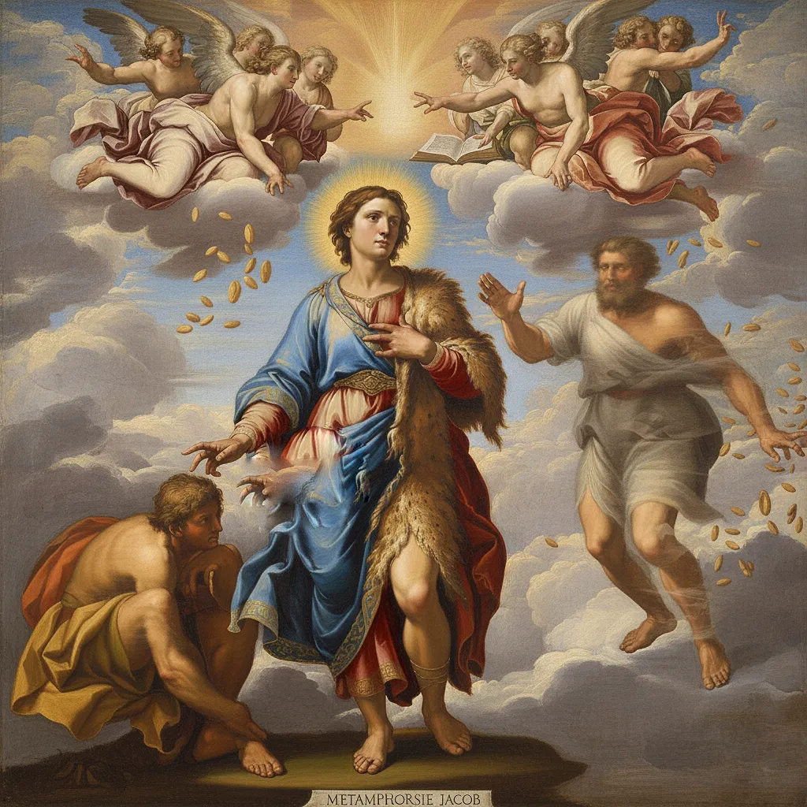

Joseph And His Brothers During Famine
Egypt, abundance, pharaoh, bondage, Joseph, Simeon, Issachar, Reuben, Benjamin, Levi, Dan, Naphtali, Gad, Asher, Naphtali, Zebulan
Joseph flourishes in imagination despite famine in the mind, yet the inner brothers of his own psyche resist alignment, turning away from the abundance he seeks to give them.
Jacob and Laban
Nabal, love, beast, Laban, Jacob
Jacob leaves the established order of Laban , fulfilling Genesis 2:24 by stepping out of the old house to pursue love and claim a new destiny through imagination and resolve
Nabal and Abigail>
Laban, fool, folly beast, sin
Like Laban, Nabal the Fool is the definition of sin , the self entrenched in the established habitual order, and runs counter to the new assumption. He dies when Abigail chooses to pursue with the new assumption.
Eden Seed in Itself Carmel Pleasure
Carmel,pleasure
"..plants yielding seed, and fruit trees bearing fruit in which is their seed, each according to its kind..". seed bearing fruit is reader's assumption.
Jacob Wrestles
Identity, Father,patriarch, persistence,teacher
Jacob wrestles with himself , striving to embody a new ideal. He is determined that the witnessing angel will bless the union and carry the news of the new transformation throughout the psyche
Mordecai and Esther
Queen, star
Mordecai is the inner influence that nurtures Esther – a fresh, beloved assumption – to sway the long-dominant ruler of the mind.
Saul Vs David
Old,New natural,man,men
David and Saul — the battle between Spirit and ego: David represents the new be-loved identity, seeded in imagination and confidence
Disciple Peter: Clean and Unclean
Apostle, apostles
Adam naming the animals shows thoughts and feelings as states of mind; Peter’s vision reveals that none are unclean when the I AM sanctifies them — consciousness determines what becomes possible.
Mary and Martha - The Master is Here
Eve, women woman
Mary and Martha represent two mental postures: one busy and distracted, the other devoted. The Master — the I AM — reveals that salvation lies in inward attention and adoration.
Phillip Seeks God
apostle, apostles, Elohim
Disciple Philip seeks God outside himself, but Jesus shows that seeing Him is seeing the Father —God is your own awareness, your imagination.
Jacob's Peeled Rods
budding,wand Aaron,tree,leaf, eden, garden
Jacob's rooting and grafting of wood is symbolic of the Tree of Life , the pathway of that assumes inner fulfillment over outer causation.
He demonstrates the seed in itself.
Jesus is the successor of all previous states.
Christ, anointed, saves, saviour
Jesus is the sum and fulfilment of the states symbolised by every biblical character before him.
Jacob Supplants Esau's Identity
vision, prophecy

Jacob supplants the identity of Esau leaving the image of old Jacob and Esau to fade away.
They Shall Become One Flesh
love, spirit holy, marriage, union, believe, receive
The hand of God is the readers "I AM" always forming the self in the mind . "they shall become one flesh" means to make it a reality
House of God
skull, temple arc, ark,tent, rock
The house of God is the head - container of the world of imagination.
James and John
apostle, apostles, brothers
Disciples James and John — Sons of Thunder - are passionate and faithful aspects of the psyche. Chosen apostles of the self who support the Christ
Jonah
sin
Jonah is an aspect of the psyche who keeps evading the work!
Mary Calls Jesus Gardener
Eden,Adam pleasure, Carmel, garden
In the garden, Mary calls Jesus "Gardener" . Showing Adam and Eve's return to Eden
Mary
Mary Magdalene, woman, women, Eve
Mary in the resurrected assumption
Paul Re-establishes the Apostles
disciples, Brothers, government
Paul admonishes aspects of himself , reestablishing the inclusion of his supporting apostles
God
hosts, living god, lord
Elohim - God and the kingdom of God are the rulers and judges of the self. Your inner government
Disciples
apostles, apostle, brother
The supporting aspects of self have fallen asleep. Like Eutychus: The Boy Who Fell From the Window
Sarah Laughs
pleasure, joy, happiness, bliss, laughter, woman,women,Eve
Sarah, the self unaccustomed to joy, laughs at the idea of the law of Assumption
Locked Out of the Garden Eden
joy, Carmel, consciousness
Locked out of the Garden of Eden — meaning "pleasure" — by doubt
Jesus with Tax Collectors and Sinners
sin
Jesus hanging out with tax collectors and sinners shows the parts of the self tied to worldly transactions being brought into line with new assumption
Paul's Reminder to Live in the End
ask believe receive
Paul's reminder to himself with regards to really living in the end! Either you possess it imaginatively or you do not.
"For who sees anything different in you? 1 Corinthians 4:7